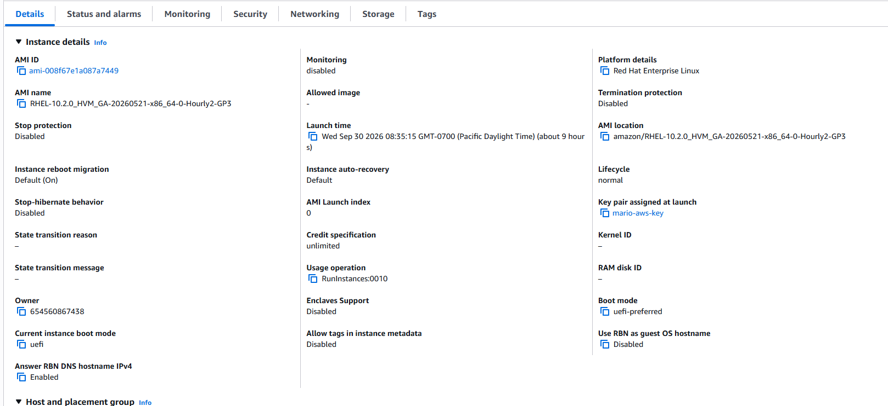
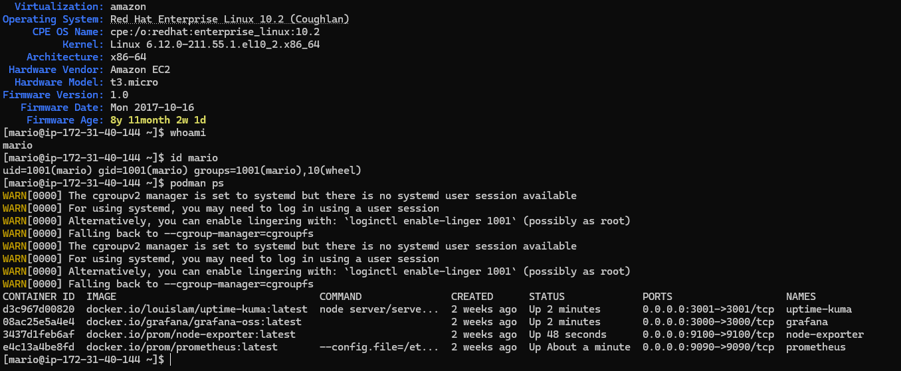
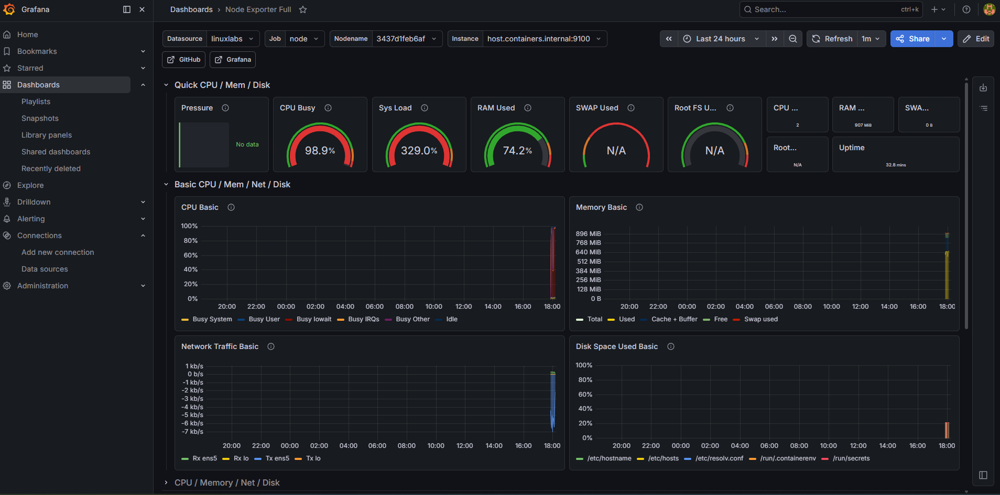
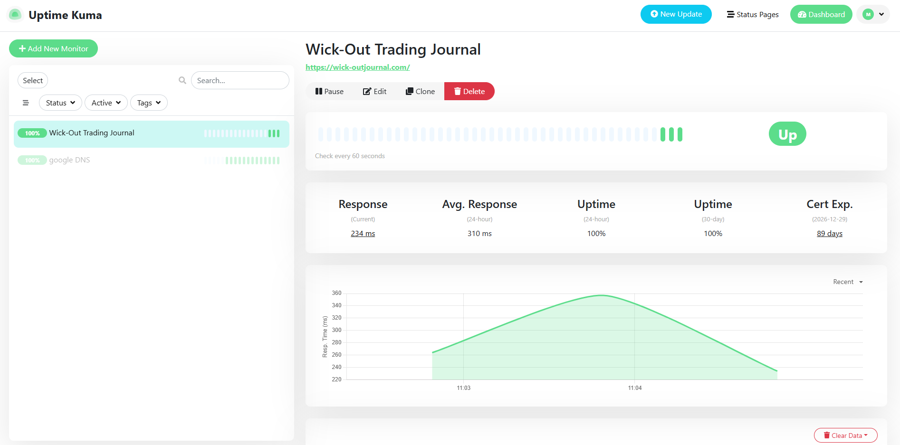

A visual walkthrough of the AWS Linux Operations Lab.

This project began with provisioning a Red Hat Enterprise Linux
virtual
AWS EC2
Red Hat Enterprise Linux 10
SSH Key Authentication
Security Groups

Administration tasks were performed on a Red Hat Enterprise Linux 10 delegation, package installation, service configuration, container management.
Technologies Used:
Red Hat Enterprise Linux 10
SSH
sudo
User Administration
Podman

A monitoring stack was deployed using Grafana, ics. The dashboard provides visibility into CPU utilization, memory consumption, disk usage, system load, and network activity across the AWS-hosted Red Hat Enterprise Linux environment.
Technologies Used:
Grafana
Prometheus
Node Exporter
Podman Containers

Uptime Kuma was deployed to monitor the availability and responsiveness of services uptime, response times, connectivity status, and overall health, helping identify issues before they impact availability.
Technologies Used:
Uptime Kuma
HTTP Monitoring
ICMP Monitoring
AWS EC2
Podman